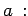

- 1. Normalform:
| ax2 + bx + c = 0 |
(1.149a) |
oder nach Division durch 
- 2. Anzahl der reellen Lösungen:
- In Abhängigkeit vom Vorzeichen der Diskriminante
ergibt sich:
-
für D < 0 gibt es 2 reelle Lösungen (2 reelle Wurzeln),
-
für D = 0 gibt es 1 reelle Lösung (2 zusammenfallende Wurzeln),
-
für D > 0 gibt es keine reelle Lösung (2 komplexe Wurzeln).
- 3. Eigenschaften der Wurzeln der quadratischen Gleichung:
- Sind x1 und x2 die Wurzeln der quadratischen Gleichung, dann gilt: